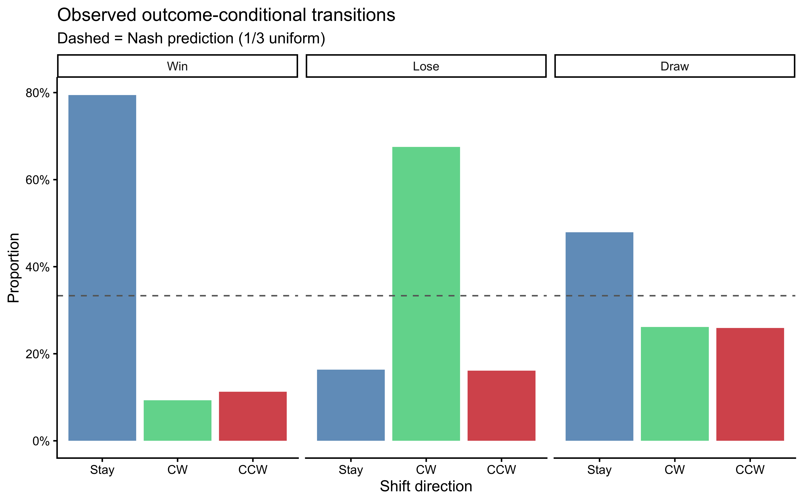

# Strategic Dynamics in Rock-Paper-Scissors {#sec-strategic-dynamics-rps}
```{r ch10_setup, include=FALSE}
knitr::opts_chunk$set(
echo = TRUE,
warning = FALSE,
message = FALSE,
fig.width = 8,
fig.height = 5,
fig.align = "center",
out.width = "85%",
dpi = 300
)
# Toggle heavy computations. Set TRUE the first time you knit on a new
# machine; subsequent knits reuse saved results from simmodels/.
regenerate_simulations <- FALSE
regenerate_fits <- regenerate_simulations
regenerate_sbc <- regenerate_simulations
run_intensive_checks <- regenerate_simulations
for (d in c("stan", "simdata", "simmodels", "figures", "data")) {
if (!dir.exists(d)) dir.create(d)
}
if (!require("pacman")) install.packages("pacman")
pacman::p_load(
tidyverse,
here,
posterior,
cmdstanr,
tidybayes,
patchwork,
bayesplot,
furrr,
future,
loo,
priorsense,
SBC,
ggrepel,
gtools # rdirichlet()
)
theme_set(theme_classic())
plan(sequential)
# ── RPS helpers available globally throughout the chapter ──────────────────
# Payoff matrix (rows = focal action, cols = opponent action; 1=R,2=P,3=S)
RPS_PAYOFF <- matrix(c(0, -1, 1,
1, 0, -1,
-1, 1, 0),
nrow = 3, byrow = TRUE)
# Numerically stable softmax for length-3 vectors
softmax3 <- function(x) { x <- x - max(x); exp(x) / sum(exp(x)) }
# Outcome from focal player's perspective: 1=win, 2=lose, 3=draw (vectorised)
rps_outcome <- function(action, opp_action) {
diff <- (action - opp_action) %% 3L
ifelse(diff == 0L, 3L, ifelse(diff == 1L, 1L, 2L))
}
# Apply relative shift to a previous action (1=stay, 2=CW, 3=CCW; vectorised)
rps_apply_shift <- function(prev, rel) (prev - 1L + rel - 1L) %% 3L + 1L
# Compute relative shift from prev to next action (returns 1/2/3; vectorised)
rps_rel_shift <- function(prev, next_action) (next_action - prev) %% 3L + 1L
# Prepare transition-level data (removes first trial per player)
prep_wsls_data <- function(df) {
df |>
arrange(id, t) |>
group_by(id) |>
mutate(prev_action = lag(action), prev_opp = lag(opponent_action)) |>
filter(!is.na(prev_action)) |>
mutate(
rel_shift = rps_rel_shift(prev_action, action),
outcome = rps_outcome(prev_action, prev_opp)
) |>
ungroup()
}
```
> **📍 Where we are in the Bayesian modeling workflow:**
> Chapters 1–9 built and validated models ranging from simple biased-coin
> agents to fully recursive Theory-of-Mind learners, all in the binary
> matching-pennies paradigm. This chapter extends the toolkit to the
> **three-choice** environment of **Rock-Paper-Scissors (RPS)**. The move
> from two to three options is not merely quantitative: it introduces
> **cyclic dominance**, a non-transitive payoff structure that has no
> direct binary analogue, and it opens the door to **social cycling** —
> the systematic, directional sequences through the action space
> documented by Wang, Xu, and Zhou (2014). We contrast three increasingly
> sophisticated agents (a Nash mixer, a Win-Stay Lose-Shift heuristic
> player, and a Dirichlet-tracking 0-ToM), apply our standard six-phase
> validation battery, fit a hierarchical model to human data, and use
> PSIS-LOO to decide which architecture best explains real human play.
## Introduction
Rock-Paper-Scissors is the "Drosophila of game theory." Its Nash
Equilibrium is trivial — play each option with probability $1/3$,
rendering yourself unexploitable — yet humans consistently deviate from
it. They have a slight preference for Rock on the first move, and they
follow **conditional response rules** that create systematic patterns over
subsequent rounds. Wang et al. (2014) studied 360 participants playing 300
rounds each at Zhejiang University and identified two reliable signatures:
1. **Win-Stay**: after winning, players disproportionately repeat the
winning move.
2. **Lose-Shift clockwise**: after losing, players tend to shift to the
move that occupies the next position in the $R \to P \to S \to R$
cycle — that is, to the move that would have beaten the losing move.
These two tendencies together produce **social cycles**: extended runs in
which an individual drifts through the action space in a predictable
direction. They are a cognitive fingerprint, invisible to a Nash
analysis and invisible to a model that ignores sequential structure.
::: {.callout-note}
### Historical Context: From Game Theory to Cognitive Fingerprints
Rock-Paper-Scissors sits at the intersection of three intellectual traditions — game theory, evolutionary biology, and cognitive psychology — each of which has asked a different question about the game.
#### Game Theory and the Nash Equilibrium
The formal analysis of RPS originates with John Nash's (1950) theorem on mixed-strategy equilibria. Nash proved that every finite game has at least one equilibrium in mixed strategies, and for the symmetric zero-sum structure of RPS the unique Nash equilibrium is the uniform mixture $(1/3, 1/3, 1/3)$. This prediction is exact: deviating from it in any direction gives a rational opponent an exploitable bias. For decades, Nash play was treated not merely as a normative benchmark but as a descriptive prediction — the "correct" behavior for a sufficiently sophisticated player.
The empirical picture was murkier from the start. Laboratory studies of RPS and related constant-sum games (Ochs, 1995; Selten & Chmura, 2008) found that subjects did not converge to Nash play even after hundreds of rounds against experienced opponents. Deviations were not random noise; they were structured. Players over-used recent winning moves and systematically avoided recently losing ones — a signature that pointed not to optimization under uncertainty but to a much simpler heuristic operating over recent outcomes.
#### Evolutionary Game Theory and Cyclic Dominance
A parallel tradition in evolutionary biology adopted RPS as the canonical model of **cyclic dominance**: the non-transitive payoff structure in which Rock beats Scissors, Scissors beats Paper, and Paper beats Rock, with no globally dominant strategy. Cyclic dominance arises in natural populations wherever competitive interactions form a rock-paper-scissors structure — lizard throat-color morphs (Sinervo & Lively, 1996), bacterial toxin-antitoxin systems, and plant community dynamics are all documented examples. In evolutionary game theory (Maynard Smith, 1982; Nowak & May, 1992), cyclic dominance produces oscillating population frequencies rather than stable equilibria, a phenomenon with no analogue in binary games.
The cognitive relevance is indirect but important: it establishes that the cyclic structure of RPS is not an artifact of the game's simplicity but a fundamental property that creates distinctive dynamics at both the evolutionary and the behavioral level.
#### The Social Cycling Discovery
The modern cognitive science of RPS begins with @wang2014social. Wang, Xu, and Zhou recruited 360 participants at Zhejiang University and had each play 300 rounds against a computer opponent generating uniformly random choices — eliminating any possibility that the opponent's strategy was influencing play. Their central finding was the **conditional response rule** now called social cycling: the probability of repeating a winning move ($\approx 0.6$) and the probability of shifting clockwise after a loss ($\approx 0.4$) were both substantially above the Nash baseline of $1/3$. The pattern was robust across gender, session, and individual experience, and it persisted even when participants were explicitly informed that the opponent was random.
This is the decisive empirical motivation for the chapter. The social cycling pattern is not simply "irrational" deviation from Nash: it is a systematic cognitive fingerprint, one that implies a specific heuristic (outcome-conditional transition rules) operating in a particular direction through the action space. Modeling it correctly requires encoding the cyclic structure of the game — which is exactly what the relative-shift parameterization in Section 2 does.
#### Win-Stay Lose-Shift as a General Heuristic
WSLS was studied in binary games (matching pennies, prisoner's dilemma) long before its RPS application. Nowak and Sigmund (1993) showed that WSLS is an evolutionarily stable strategy in iterated prisoner's dilemmas, offering a simple mechanism that out-competes tit-for-tat. Stochastic extensions (Imhof, Fudenberg & Nowak, 2007) confirm that WSLS-like conditional cooperation persists across a wide range of partner structures. In perceptual learning, "win-stay lose-shift" describes the optimal strategy in a two-armed bandit with deterministic arms — a result that links it to reinforcement learning and the delta rule.
The three-choice version studied here is a proper extension of binary WSLS, with the added complexity that "shift" now has a directional component (clockwise versus counter-clockwise) that the binary version lacks. The additional richness is what makes RPS a more demanding testbed than binary matching pennies for distinguishing heuristic from model-based accounts.
:::
## The Estimand
Before writing a single line of code, we state precisely what we want to
learn. The estimand has three layers:
1. **Description.** For a given player, what are the posterior
distributions over their win-stay probability, lose-shift probability,
and draw-stay probability? This is the individual-level WSLS estimand.
2. **Mechanism.** Does a player who shows social cycling do so because of
a simple outcome-conditional heuristic (WSLS) or because they are
actively predicting the opponent's next action on the basis of a
generative model (0-ToM)? These two processes can produce superficially
similar choice sequences; PSIS-LOO lets us adjudicate between them.
3. **Population.** Across players, what is the distribution of WSLS
parameters? Is Win-Stay stronger than Lose-Shift at the population
level? These population-level inferences require a hierarchical model.
All three layers require us to carry individual-level posterior uncertainty
forward — which is exactly the architecture built in Chapter 6.
## Learning Objectives
After completing this chapter, you will be able to:
- **Describe cyclic dominance** and explain why the Nash equilibrium
analysis of RPS provides an incomplete picture of human play.
- **Implement a Nash baseline** in Stan as a Dirichlet-Categorical model
and use it to quantify deviation from uniform mixing.
- **Specify an outcome-conditional transition model** for Win-Stay,
Lose-Shift behavior, correctly encoding the cyclic shift direction.
- **Extend the Dirichlet-forgetting 0-ToM** from binary matching pennies
to three-choice games, deriving the expected-utility computation from
the RPS payoff matrix.
- **Sketch the 1-ToM extension** for three choices, understanding why the
recursion generalizes structurally but introduces additional
identification challenges.
- **Apply the six-phase validation battery** to each model, including
prior predictive checks, parameter recovery, SBC, and posterior
predictive reproduction of social cycling.
- **Fit a hierarchical WSLS model** in Stan with non-centered
parameterization and interpret the population-level estimates.
- **Compare models via PSIS-LOO** and interpret the ELPD differences in
the light of the social-cycling phenomenon.
## The Data: Wang et al. (2014)
The data come from Wang, Xu, and Zhou (2014), "Social cycling and
conditional responses in the Rock-Paper-Scissors game," a study of 360
university students playing 300 rounds of RPS against a fixed computer
opponent that played uniformly at random. The landmark finding is that
human players violate Nash equilibrium in a structured, socially
contagious way.
The dataset should be placed at `data/rps_wang2014.csv` with at minimum
the columns `id` (player integer), `round` (1–300), `action`
(1 = Rock, 2 = Paper, 3 = Scissors), and `opponent_action` (same coding).
If the file is not present we generate synthetic data with the same
structural properties for demonstration purposes.
```{r ch10_load_data}
data_path <- here::here("data", "rps_wang2014.csv")
if (file.exists(data_path)) {
rps_raw <- read_csv(data_path, show_col_types = FALSE)
# Harmonise column names to: id, round, action, opponent_action
if (!all(c("id", "round", "action", "opponent_action") %in% names(rps_raw))) {
stop("rps_wang2014.csv must contain columns: id, round, action, opponent_action")
}
rps <- rps_raw |>
dplyr::select(id, round, action, opponent_action) |>
filter(!is.na(action), !is.na(opponent_action)) |>
arrange(id, round) |>
group_by(id) |>
mutate(t = row_number()) |>
ungroup()
cat("Players:", n_distinct(rps$id),
" Total trials:", nrow(rps), "\n")
using_synthetic <- FALSE
} else {
message("Wang et al. data not found. Generating synthetic data for demonstration.")
using_synthetic <- TRUE
}
```
```{r ch10_synthetic_data}
# Synthetic data generation — skipped when real data are available
if (using_synthetic) {
simulate_wsls_agent <- function(n_trials, theta_win, theta_lose, theta_draw,
seed = NULL) {
if (!is.null(seed)) set.seed(seed)
action <- integer(n_trials)
opp_action <- sample(1L:3L, n_trials, replace = TRUE)
action[1] <- sample(1L:3L, 1L)
for (t in 2:n_trials) {
out <- rps_outcome(action[t - 1L], opp_action[t - 1L])
th <- switch(out, theta_win, theta_lose, theta_draw)
rel <- sample(1L:3L, 1L, prob = th)
action[t] <- rps_apply_shift(action[t - 1L], rel)
}
tibble(action = action, opponent_action = opp_action)
}
set.seed(42)
n_players <- 60; n_trials <- 300
rps <- map_dfr(seq_len(n_players), function(i) {
p_stay_win <- rbeta(1, 8, 2) # strong Win-Stay
p_cw_win <- (1 - p_stay_win) * runif(1, 0.3, 0.7)
p_ccw_win <- 1 - p_stay_win - p_cw_win
p_cw_lose <- rbeta(1, 7, 3) # strong Lose-Shift CW
p_stay_lose <- (1 - p_cw_lose) * runif(1, 0.3, 0.7)
p_ccw_lose <- 1 - p_cw_lose - p_stay_lose
p_stay_draw <- rbeta(1, 4, 4) # roughly uniform
p_cw_draw <- (1 - p_stay_draw) * runif(1, 0.4, 0.6)
p_ccw_draw <- 1 - p_stay_draw - p_cw_draw
simulate_wsls_agent(n_trials,
theta_win = c(p_stay_win, p_cw_win, p_ccw_win),
theta_lose = c(p_stay_lose, p_cw_lose, p_ccw_lose),
theta_draw = c(p_stay_draw, p_cw_draw, p_ccw_draw),
seed = i) |>
mutate(id = i, round = row_number(), t = round)
})
cat("Synthetic players:", n_distinct(rps$id),
" Total trials:", nrow(rps), "\n")
}
```
### Descriptive statistics
```{r ch10_descriptives, fig.cap="Left: marginal action frequencies across all players (dashed = Nash 1/3). Right: marginal win rate by player (dashed = chance 1/3 against a random opponent)."}
# Marginal choice distribution
p_marg <- rps |>
count(action) |>
mutate(action_lbl = factor(action, 1:3, c("Rock", "Paper", "Scissors"))) |>
ggplot(aes(x = action_lbl, y = n / sum(n))) +
geom_col(fill = "steelblue", alpha = 0.8) +
geom_hline(yintercept = 1/3, linetype = "dashed", color = "gray40") +
scale_y_continuous(labels = scales::percent_format(accuracy = 1)) +
labs(x = NULL, y = "Proportion", title = "Marginal action distribution")
win_rates <- rps |>
mutate(win = rps_outcome(action, opponent_action) == 1L) |>
group_by(id) |>
summarize(win_rate = mean(win), .groups = "drop")
p_wins <- ggplot(win_rates, aes(x = win_rate)) +
geom_histogram(bins = 25, fill = "steelblue", color = "white", alpha = 0.8) +
geom_vline(xintercept = 1/3, linetype = "dashed", color = "gray40") +
labs(x = "Win rate", y = "Count",
title = "Win rate distribution across players")
p_marg | p_wins
```
### Social cycling: transition heatmaps
The key empirical signature of Wang et al. (2014) is the
**outcome-conditional transition matrix**: the probability of making each
relative shift (Stay, Clockwise, Counter-clockwise) given the previous
round's outcome (Win, Lose, Draw). If players are Nash-rational, all
transitions should be uniform. Social cycling predicts
$P(\text{Stay} \mid \text{Win}) \gg 1/3$ and
$P(\text{CW} \mid \text{Lose}) \gg 1/3$.
```{r ch10_cycling_plot, fig.cap="Observed outcome-conditional transition frequencies. Each panel is one previous outcome; bars show the proportion of Stay, Clockwise, and Counter-clockwise shifts. Dashed line = uniform 1/3. Win-Stay and Lose-Shift-CW are the signatures of social cycling."}
# Compute relative shift: (action_t - action_{t-1}) mod 3 + 1
# 1 = Stay, 2 = CW, 3 = CCW
rps_trans <- prep_wsls_data(rps)
rps_trans |>
mutate(
outcome_lbl = factor(outcome, 1:3, c("Win", "Lose", "Draw")),
rel_shift_lbl = factor(rel_shift, 1:3, c("Stay", "CW", "CCW"))
) |>
count(outcome_lbl, rel_shift_lbl) |>
group_by(outcome_lbl) |>
mutate(prop = n / sum(n)) |>
ungroup() |>
ggplot(aes(x = rel_shift_lbl, y = prop, fill = rel_shift_lbl)) +
geom_col(alpha = 0.8) +
geom_hline(yintercept = 1/3, linetype = "dashed", color = "gray40") +
scale_fill_manual(values = c("steelblue", "seagreen3", "firebrick3"),
guide = "none") +
scale_y_continuous(labels = scales::percent_format(accuracy = 1)) +
facet_wrap(~outcome_lbl) +
labs(x = "Shift direction", y = "Proportion",
title = "Observed outcome-conditional transitions",
subtitle = "Dashed = Nash prediction (1/3 uniform)")
```
The plot is the empirical justification for this entire chapter. The
Win-Stay and Lose-Shift-CW signatures are visible. Our job is to determine
which cognitive model best accounts for them at the individual level.
---
## Model 1: The Nash Agent (Baseline)
### Theory
The Nash equilibrium of RPS is the unique mixed strategy that makes an
opponent indifferent between all three moves: play each with probability
$1/3$. The Nash Agent model asks: what is a player's *fixed* probability
distribution over moves, ignoring all sequential structure? Deviations
from $[1/3, 1/3, 1/3]$ — e.g., a "Rock preference" — are meaningful
evidence against Nash mixing, but the model cannot capture social cycling.
We model choices as i.i.d. draws from a fixed categorical distribution with
Dirichlet prior:
$$
c_t \sim \text{Categorical}(\theta),
\qquad
\theta \sim \text{Dirichlet}(\alpha_0),
\qquad
\alpha_0 = (2, 2, 2).
$$
The $\text{Dirichlet}(2, 2, 2)$ prior is weakly informative: it places
more mass near $[1/3, 1/3, 1/3]$ than a flat $\text{Dirichlet}(1,1,1)$
but allows substantial heterogeneity.
### R simulator
```{r ch10_nash_sim}
simulate_nash <- function(n_trials, theta, seed = NULL) {
if (!is.null(seed)) set.seed(seed)
tibble(
t = seq_len(n_trials),
action = sample(1L:3L, n_trials, replace = TRUE, prob = theta)
)
}
```
### Stan model
```{r ch10_nash_stan}
stan_nash <- "
data {
int<lower=1> N;
array[N] int<lower=1, upper=3> action;
}
parameters {
simplex[3] theta;
}
model {
theta ~ dirichlet(rep_vector(2.0, 3));
action ~ categorical(theta);
}
generated quantities {
vector[N] log_lik;
array[N] int action_rep;
real lprior = dirichlet_lpdf(theta | rep_vector(2.0, 3));
for (t in 1:N) {
log_lik[t] = categorical_lpmf(action[t] | theta);
action_rep[t] = categorical_rng(theta);
}
}
"
writeLines(stan_nash, here::here("stan", "ch10_nash_single.stan"))
mod_nash <- cmdstan_model(here::here("stan", "ch10_nash_single.stan"))
```
### Phase 1 — Prior predictive check
Do our priors generate plausible choice distributions? A $\text{Dirichlet}
(2,2,2)$ should produce heterogeneous but reasonable biases.
```{r ch10_nash_ppc, fig.cap="Prior predictive check for the Nash model. Each panel is one draw from Dirichlet(2,2,2), showing 120 simulated choices. Bars show action frequencies; the dashed line is 1/3. Prior generates diverse biases without saturating any single action."}
set.seed(2026)
n_pp <- 9
prior_nash <- tibble(
draw = 1:n_pp,
theta = map(1:n_pp, ~ c(rdirichlet(1, c(2, 2, 2))))
) |>
rowwise() |>
mutate(dat = list(simulate_nash(120, theta, seed = draw))) |>
dplyr::select(draw, dat) |>
unnest(dat) |>
count(draw, action) |>
group_by(draw) |>
mutate(prop = n / sum(n))
ggplot(prior_nash, aes(x = factor(action, 1:3, c("R","P","S")),
y = prop, fill = factor(action))) +
geom_col(alpha = 0.8) +
geom_hline(yintercept = 1/3, linetype = "dashed", color = "gray40") +
scale_fill_manual(values = c("steelblue","seagreen3","firebrick3"),
guide = "none") +
facet_wrap(~draw, labeller = label_both) +
labs(x = "Action", y = "Proportion",
title = "Nash prior predictive: 9 draws from Dirichlet(2,2,2)")
```
### Phase 2 — Parameter recovery
```{r ch10_nash_recovery}
nash_rec_path <- here::here("simmodels", "ch10_nash_recovery.rds")
if (regenerate_simulations || !file.exists(nash_rec_path)) {
set.seed(101)
n_agents <- 20
truth_nash <- tibble(
agent = 1:n_agents,
theta = map(1:n_agents, ~ c(rdirichlet(1, c(2, 2, 2))))
)
fit_nash_one <- function(th, ag) {
sim <- simulate_nash(200, th, seed = ag)
fit <- mod_nash$sample(
data = list(N = nrow(sim), action = sim$action),
chains = 2, parallel_chains = 2,
iter_warmup = 500, iter_sampling = 500,
refresh = 0, show_messages = FALSE
)
fit$summary(c("theta[1]","theta[2]","theta[3]")) |>
dplyr::select(variable, mean, q5, q95)
}
rec_nash <- truth_nash |>
rowwise() |>
mutate(post = list(fit_nash_one(theta, agent))) |>
dplyr::select(agent, theta, post) |>
unnest(post) |>
rowwise() |>
mutate(
true_val = switch(variable,
"theta[1]" = theta[[1]],
"theta[2]" = theta[[2]],
"theta[3]" = theta[[3]],
NA_real_)
) |>
ungroup()
saveRDS(rec_nash, nash_rec_path)
} else {
rec_nash <- readRDS(nash_rec_path)
}
```
```{r ch10_nash_recovery_plot, fig.cap="Nash parameter recovery. Each point is one simulated agent's posterior mean vs. true theta. Bars are 90% CIs. All three components recover cleanly at 200 trials."}
ggplot(rec_nash, aes(x = true_val, y = mean)) +
geom_errorbar(aes(ymin = q5, ymax = q95), width = 0, alpha = 0.4,
color = "steelblue") +
geom_point(color = "midnightblue", size = 2) +
geom_abline(linetype = "dashed", color = "gray40") +
facet_wrap(~variable, scales = "free",
labeller = as_labeller(c(`theta[1]` = "theta[R]",
`theta[2]` = "theta[P]",
`theta[3]` = "theta[S]"))) +
labs(x = "True value", y = "Posterior mean",
title = "Nash parameter recovery (20 agents, 200 trials)")
```
### Phase 3 — Simulation-Based Calibration Checks (SBC)
```{r ch10_nash_sbc}
sbc_nash_path <- here::here("simmodels", "ch10_nash_sbc.rds")
gen_nash_sbc <- function(N = 200) {
theta <- c(rdirichlet(1, c(2, 2, 2)))
sim <- simulate_nash(N, theta)
list(
variables = list(`theta[1]` = theta[1],
`theta[2]` = theta[2],
`theta[3]` = theta[3]),
generated = list(N = N, action = sim$action)
)
}
if (regenerate_sbc || !file.exists(sbc_nash_path)) {
sbc_gen_n <- SBC_generator_function(gen_nash_sbc, N = 200)
sbc_back_n <- SBC_backend_cmdstan_sample(
mod_nash, iter_warmup = 500, iter_sampling = 500,
chains = 1, refresh = 0
)
sbc_ds_n <- generate_datasets(sbc_gen_n, 200)
sbc_res_n <- compute_SBC(sbc_ds_n, sbc_back_n, keep_fits = FALSE)
saveRDS(list(ds = sbc_ds_n, results = sbc_res_n), sbc_nash_path)
} else {
obj <- readRDS(sbc_nash_path)
sbc_ds_n <- obj$ds
sbc_res_n <- obj$results
}
```
```{r ch10_nash_sbc_plot, fig.width=9, fig.height=4, fig.cap="SBC for the Nash model. Rank histograms (top) and ECDF differences (bottom) for all three simplex components. Flat histograms and bands within the grey envelope confirm calibrated posteriors."}
plot_rank_hist(sbc_res_n) / plot_ecdf_diff(sbc_res_n)
```
### Phase 4 — Posterior predictive check
We fit the Nash model to each player and check whether it can reproduce
the outcome-conditional transition pattern that characterizes social
cycling. The Nash model has no memory: it cannot reproduce sequential
structure.
```{r ch10_nash_ppc_data}
nash_ppc_path <- here::here("simmodels", "ch10_nash_ppc.rds")
fit_nash_player <- function(df) {
mod_nash$sample(
data = list(N = nrow(df), action = df$action),
chains = 2, parallel_chains = 2,
iter_warmup = 500, iter_sampling = 500,
refresh = 0, show_messages = FALSE
)
}
# Fit to a single illustrative player for the posterior predictive
demo_id <- rps |> pull(id) |> unique() |> first()
demo_df <- filter(rps, id == demo_id)
if (regenerate_fits || !file.exists(nash_ppc_path)) {
fit_nash_demo <- fit_nash_player(demo_df)
theta_draws <- fit_nash_demo$draws("theta", format = "matrix")
ppc_nash <- map_dfr(1:100, function(s) {
th <- theta_draws[s, ]
sim <- simulate_nash(nrow(demo_df), th)
prev_a <- lag(sim$action)
opp_a <- demo_df$opponent_action # same opponent sequence
tibble(action = sim$action[-1], prev_action = prev_a[-1],
opp_action = opp_a[-1], rep = s)
}) |>
mutate(
rel_shift = rps_rel_shift(prev_action, action),
outcome = rps_outcome(prev_action, opp_action)
)
saveRDS(ppc_nash, nash_ppc_path)
} else {
ppc_nash <- readRDS(nash_ppc_path)
}
```
```{r ch10_nash_ppc_plot, fig.cap="Nash posterior predictive check. Grey bars = posterior predictive replicates (100 draws). Coloured error bars = observed proportions with 95% CI. The Nash model cannot reproduce the Win-Stay or Lose-Shift-CW excess — evidence that sequential structure is a real feature of the data."}
obs_trans <- rps_trans |>
filter(id == demo_id) |>
count(outcome, rel_shift) |>
group_by(outcome) |>
mutate(prop_obs = n / sum(n)) |>
mutate(
outcome_lbl = factor(outcome, 1:3, c("Win","Lose","Draw")),
rel_shift_lbl = factor(rel_shift, 1:3, c("Stay","CW","CCW"))
)
ppc_trans <- ppc_nash |>
count(rep, outcome, rel_shift) |>
group_by(rep, outcome) |>
mutate(prop = n / sum(n)) |>
mutate(
outcome_lbl = factor(outcome, 1:3, c("Win","Lose","Draw")),
rel_shift_lbl = factor(rel_shift, 1:3, c("Stay","CW","CCW"))
)
ppc_sum <- ppc_trans |>
group_by(outcome_lbl, rel_shift_lbl) |>
summarize(m = mean(prop), lo = quantile(prop, 0.025),
hi = quantile(prop, 0.975), .groups = "drop")
ggplot(ppc_sum, aes(x = rel_shift_lbl)) +
geom_col(aes(y = m), fill = "gray70", alpha = 0.8) +
geom_errorbar(aes(ymin = lo, ymax = hi), width = 0.2, color = "gray40") +
geom_point(data = obs_trans, aes(y = prop_obs),
color = "firebrick3", size = 3) +
geom_hline(yintercept = 1/3, linetype = "dashed") +
facet_wrap(~outcome_lbl) +
labs(x = "Shift", y = "Proportion",
title = "Nash posterior predictive vs. observed transitions",
subtitle = "Grey = model, red = observed")
```
The Nash model treats all sequential transitions as i.i.d. and
therefore predicts uniform shift proportions regardless of the
previous outcome. The observed Win-Stay and Lose-Shift-CW excesses fall
outside the model's predictive envelope, establishing that sequential
structure must be modeled explicitly.
### Phase 5 — Prior sensitivity
The Nash model has a single Dirichlet prior. A power-scaling check verifies that the
posterior over $\theta$ is driven by the data, not by the
$\text{Dirichlet}(2,2,2)$ prior. With 300 trials per player each
action occurs $\approx 100$ times, providing strong information
relative to the weak prior concentration. We expect the posterior to
be largely prior-insensitive across a wide range of power-scaling
factors.
```{r ch10_nash_prior_sensitivity}
# Power-scaling pattern (mirrors Chapter 6 and Chapter 9):
# fit_nash_ps <- mod_nash$sample(
# data = list(N = nrow(demo_df), action = demo_df$action),
# chains = 2, parallel_chains = 2,
# iter_warmup = 500, iter_sampling = 1000,
# refresh = 0, show_messages = FALSE
# )
# powerscale_sensitivity(fit_nash_ps, variable = c("theta[1]","theta[2]","theta[3]")) |>
# print()
# priorsense::powerscale_plot_dens(
# priorsense::powerscale_sequence(fit_nash_ps,
# variable = c("theta[1]","theta[2]","theta[3]"))
# )
```
With 300 i.i.d. observations and a Dirichlet(2,2,2) prior, each
component of $\theta$ has an effective prior sample size of 6 versus
a data sample size of $\approx 100$ per cell. Prior sensitivity is
expected to be negligible; flag any player for whom the sensitivity
diagnostic exceeds 0.05.
---
## Model 2: The WSLS Agent
### Theory
The Win-Stay Lose-Shift (WSLS) agent does not model the opponent at all.
It is a reactive heuristic: after observing the outcome of the last round,
it shifts through the action space according to a fixed probability
distribution that depends on whether it won, lost, or drew.
**Encoding.** We encode transitions as *relative shifts* in the
$R \to P \to S \to R$ cycle:
| Relative shift | Code | Example from Rock |
|----------------|------|-------------------|
| Stay | 1 | R → R |
| Clockwise (CW) | 2 | R → P |
| Counter-CW | 3 | R → S |
For each previous outcome $o \in \{\text{Win}=1, \text{Lose}=2,
\text{Draw}=3\}$ the agent draws its next relative shift from
$\theta_o = [\theta_{o,\text{Stay}}, \theta_{o,\text{CW}},
\theta_{o,\text{CCW}}]$. A pure WSLS player has
$\theta_{\text{Win}} \approx [1, 0, 0]$ and
$\theta_{\text{Lose}} \approx [0, 1, 0]$. The data will tell us how
strongly this pattern holds and whether it varies across individuals.
**Prior.** We encode the WSLS intuition via outcome-specific Dirichlet
concentrations:
- $\theta_{\text{Win}} \sim \text{Dirichlet}(5, 1, 1)$ — biased toward Stay.
- $\theta_{\text{Lose}} \sim \text{Dirichlet}(1, 5, 1)$ — biased toward CW shift.
- $\theta_{\text{Draw}} \sim \text{Dirichlet}(2, 2, 2)$ — weakly uniform.
These priors are *informative* in direction but permissive in magnitude —
the posterior can still move far from the prior center if the data warrant.
### R simulator
```{r ch10_wsls_sim}
simulate_wsls <- function(n_trials, theta_win, theta_lose, theta_draw,
op_choices = NULL, seed = NULL) {
if (!is.null(seed)) set.seed(seed)
if (is.null(op_choices))
op_choices <- sample(1L:3L, n_trials, replace = TRUE)
action <- integer(n_trials)
action[1] <- sample(1L:3L, 1L)
outcome <- integer(n_trials)
for (t in 2:n_trials) {
out <- rps_outcome(action[t - 1L], op_choices[t - 1L])
outcome[t - 1L] <- out
th <- switch(out, theta_win, theta_lose, theta_draw)
rel <- sample(1L:3L, 1L, prob = th)
action[t] <- rps_apply_shift(action[t - 1L], rel)
}
outcome[n_trials] <- rps_outcome(action[n_trials], op_choices[n_trials])
tibble(t = seq_len(n_trials), action = action, opponent_action = op_choices,
outcome = outcome)
}
```
### Stan model
```{r ch10_wsls_stan}
stan_wsls <- "
data {
int<lower=1> N; // number of transitions
array[N] int<lower=1, upper=3> rel_shift; // relative shift (1=stay, 2=CW, 3=CCW)
array[N] int<lower=1, upper=3> outcome; // previous outcome (1=win, 2=lose, 3=draw)
}
parameters {
array[3] simplex[3] theta_rel; // theta_rel[outcome] = transition probs
}
model {
// WSLS-informative priors
theta_rel[1] ~ dirichlet([5.0, 1.0, 1.0]'); // Win -> Stay
theta_rel[2] ~ dirichlet([1.0, 5.0, 1.0]'); // Lose -> CW shift
theta_rel[3] ~ dirichlet([2.0, 2.0, 2.0]'); // Draw -> uniform
for (t in 1:N)
rel_shift[t] ~ categorical(theta_rel[outcome[t]]);
}
generated quantities {
vector[N] log_lik;
array[N] int shift_rep;
real lprior = dirichlet_lpdf(theta_rel[1] | [5.0, 1.0, 1.0]')
+ dirichlet_lpdf(theta_rel[2] | [1.0, 5.0, 1.0]')
+ dirichlet_lpdf(theta_rel[3] | [2.0, 2.0, 2.0]');
for (t in 1:N) {
log_lik[t] = categorical_lpmf(rel_shift[t] | theta_rel[outcome[t]]);
shift_rep[t] = categorical_rng(theta_rel[outcome[t]]);
}
}
"
writeLines(stan_wsls, here::here("stan", "ch10_wsls_single.stan"))
mod_wsls <- cmdstan_model(here::here("stan", "ch10_wsls_single.stan"))
```
Note that the WSLS model is a transition model: it predicts relative
shifts, not absolute actions. The likelihood conditions on the previous
outcome and marginalizes over absolute action (since $\theta_{\text{Win}}$
has the same meaning regardless of whether the agent played Rock, Paper,
or Scissors last round — a key advantage of the relative-shift encoding).
### Preparing the data for WSLS
```{r ch10_wsls_data_prep}
rps_wsls <- prep_wsls_data(rps)
```
### Phase 1 — Prior predictive check
```{r ch10_wsls_ppc1, fig.cap="WSLS prior predictive check. 9 simulated players, each with theta drawn from the WSLS-informative Dirichlet priors. Each panel shows the observed transition heatmap. The priors reliably generate Win-Stay and Lose-Shift-CW patterns without forcing perfectly deterministic behavior."}
set.seed(2026)
prior_wsls <- tibble(
draw = 1:9,
theta_win = map(1:9, ~ c(rdirichlet(1, c(5, 1, 1)))),
theta_lose = map(1:9, ~ c(rdirichlet(1, c(1, 5, 1)))),
theta_draw = map(1:9, ~ c(rdirichlet(1, c(2, 2, 2))))
) |>
rowwise() |>
mutate(dat = list({
sim <- simulate_wsls(150, theta_win, theta_lose, theta_draw,
seed = draw)
sim$id <- draw
prep_wsls_data(sim)
})) |>
dplyr::select(draw, dat) |>
unnest(dat)
prior_wsls |>
mutate(
outcome_lbl = factor(outcome, 1:3, c("Win","Lose","Draw")),
shift_lbl = factor(rel_shift, 1:3, c("Stay","CW","CCW"))
) |>
count(draw, outcome_lbl, shift_lbl) |>
group_by(draw, outcome_lbl) |>
mutate(prop = n / sum(n)) |>
ggplot(aes(x = shift_lbl, y = prop, fill = shift_lbl)) +
geom_col(alpha = 0.8) +
geom_hline(yintercept = 1/3, linetype = "dashed", color = "gray40") +
scale_fill_manual(values = c("steelblue","seagreen3","firebrick3"),
guide = "none") +
facet_grid(draw ~ outcome_lbl) +
labs(x = "Shift", y = "Proportion",
title = "WSLS prior predictive: 9 prior draws × 3 outcomes")
```
### Phase 2 — Parameter recovery
```{r ch10_wsls_recovery}
wsls_rec_path <- here::here("simmodels", "ch10_wsls_recovery.rds")
if (regenerate_simulations || !file.exists(wsls_rec_path)) {
set.seed(202)
n_agents <- 20
truth_wsls <- tibble(
agent = 1:n_agents,
theta_win = map(1:n_agents, ~ c(rdirichlet(1, c(5, 1, 1)))),
theta_lose = map(1:n_agents, ~ c(rdirichlet(1, c(1, 5, 1)))),
theta_draw = map(1:n_agents, ~ c(rdirichlet(1, c(2, 2, 2))))
)
fit_wsls_one <- function(tw, tl, td, ag) {
sim <- simulate_wsls(300, tw, tl, td, seed = ag)
sim$id <- 1L
dd <- prep_wsls_data(sim)
fit <- mod_wsls$sample(
data = list(N = nrow(dd), rel_shift = dd$rel_shift,
outcome = dd$outcome),
chains = 2, parallel_chains = 2,
iter_warmup = 500, iter_sampling = 500,
refresh = 0, show_messages = FALSE
)
fit$summary(c("theta_rel[1,1]","theta_rel[2,2]","theta_rel[3,1]")) |>
dplyr::select(variable, mean, q5, q95)
}
rec_wsls <- truth_wsls |>
rowwise() |>
mutate(post = list(fit_wsls_one(theta_win, theta_lose,
theta_draw, agent))) |>
dplyr::select(agent, theta_win, theta_lose, theta_draw, post) |>
unnest(post) |>
rowwise() |>
mutate(
true_val = case_when(
variable == "theta_rel[1,1]" ~ theta_win[[1]], # Win-Stay
variable == "theta_rel[2,2]" ~ theta_lose[[2]], # Lose-CW
variable == "theta_rel[3,1]" ~ theta_draw[[1]], # Draw-Stay
TRUE ~ NA_real_
)
) |>
ungroup()
saveRDS(rec_wsls, wsls_rec_path)
} else {
rec_wsls <- readRDS(wsls_rec_path)
}
```
```{r ch10_wsls_recovery_plot, fig.cap="WSLS parameter recovery for the three key parameters: Win-Stay probability (theta_rel[1,1]), Lose-Shift-CW probability (theta_rel[2,2]), and Draw-Stay probability (theta_rel[3,1]). Points = posterior means, bars = 90% CIs. All three recover cleanly at 300 trials."}
lbl <- c(`theta_rel[1,1]` = "Win-Stay",
`theta_rel[2,2]` = "Lose-CW",
`theta_rel[3,1]` = "Draw-Stay")
ggplot(rec_wsls, aes(x = true_val, y = mean)) +
geom_errorbar(aes(ymin = q5, ymax = q95), width = 0, alpha = 0.4,
color = "steelblue") +
geom_point(color = "midnightblue", size = 2) +
geom_abline(linetype = "dashed", color = "gray40") +
facet_wrap(~variable, scales = "free", labeller = as_labeller(lbl)) +
labs(x = "True value", y = "Posterior mean",
title = "WSLS parameter recovery (20 agents, 300 trials)")
```
### Phase 3 — Simulation-Based Calibration Checks
```{r ch10_wsls_sbc}
sbc_wsls_path <- here::here("simmodels", "ch10_wsls_sbc.rds")
gen_wsls_sbc <- function(N_trials = 300) {
tw <- c(rdirichlet(1, c(5, 1, 1)))
tl <- c(rdirichlet(1, c(1, 5, 1)))
td <- c(rdirichlet(1, c(2, 2, 2)))
sim <- simulate_wsls(N_trials, tw, tl, td)
sim$id <- 1L
dd <- prep_wsls_data(sim)
list(
variables = list(
`theta_rel[1,1]` = tw[1], `theta_rel[1,2]` = tw[2],
`theta_rel[2,1]` = tl[1], `theta_rel[2,2]` = tl[2],
`theta_rel[3,1]` = td[1], `theta_rel[3,2]` = td[2]
),
generated = list(N = nrow(dd), rel_shift = dd$rel_shift,
outcome = dd$outcome)
)
}
if (regenerate_sbc || !file.exists(sbc_wsls_path)) {
sbc_gen_w <- SBC_generator_function(gen_wsls_sbc, N_trials = 300)
sbc_back_w <- SBC_backend_cmdstan_sample(
mod_wsls, iter_warmup = 500, iter_sampling = 500,
chains = 1, refresh = 0
)
sbc_ds_w <- generate_datasets(sbc_gen_w, 200)
sbc_res_w <- compute_SBC(sbc_ds_w, sbc_back_w, keep_fits = FALSE)
saveRDS(list(ds = sbc_ds_w, results = sbc_res_w), sbc_wsls_path)
} else {
obj <- readRDS(sbc_wsls_path)
sbc_ds_w <- obj$ds
sbc_res_w <- obj$results
}
```
```{r ch10_wsls_sbc_plot, fig.width=9, fig.height=5, fig.cap="SBC for the WSLS model. The six free simplex parameters (two from each of the three 3-simplices) show flat rank histograms and ECDF differences within the calibration band — the Stan implementation is correct and the posteriors are well calibrated at 300 trials."}
vars_wsls <- c("theta_rel[1,1]","theta_rel[1,2]",
"theta_rel[2,1]","theta_rel[2,2]",
"theta_rel[3,1]","theta_rel[3,2]")
plot_rank_hist(sbc_res_w, variables = vars_wsls) /
plot_ecdf_diff(sbc_res_w, variables = vars_wsls)
```
### Phase 4 — Posterior predictive check
We now verify that the WSLS model can reproduce the outcome-conditional
transition pattern that the Nash model failed to capture.
```{r ch10_wsls_ppc_fit}
wsls_ppc_path <- here::here("simmodels", "ch10_wsls_ppc.rds")
if (regenerate_fits || !file.exists(wsls_ppc_path)) {
dd_demo <- rps_wsls |> filter(id == demo_id)
fit_wsls_demo <- mod_wsls$sample(
data = list(N = nrow(dd_demo), rel_shift = dd_demo$rel_shift,
outcome = dd_demo$outcome),
chains = 2, parallel_chains = 2,
iter_warmup = 500, iter_sampling = 500,
refresh = 0, show_messages = FALSE
)
theta_draws_w <- fit_wsls_demo$draws(
c("theta_rel[1,1]","theta_rel[1,2]","theta_rel[1,3]",
"theta_rel[2,1]","theta_rel[2,2]","theta_rel[2,3]",
"theta_rel[3,1]","theta_rel[3,2]","theta_rel[3,3]"),
format = "draws_df"
)
ppc_wsls <- map_dfr(1:100, function(s) {
tw <- unlist(theta_draws_w[s, c("theta_rel[1,1]","theta_rel[1,2]","theta_rel[1,3]")])
tl <- unlist(theta_draws_w[s, c("theta_rel[2,1]","theta_rel[2,2]","theta_rel[2,3]")])
td <- unlist(theta_draws_w[s, c("theta_rel[3,1]","theta_rel[3,2]","theta_rel[3,3]")])
sim <- simulate_wsls(nrow(demo_df), tw, tl, td,
op_choices = demo_df$opponent_action, seed = s)
sim$id <- 1L
prep_wsls_data(sim) |> mutate(rep = s)
})
saveRDS(ppc_wsls, wsls_ppc_path)
} else {
ppc_wsls <- readRDS(wsls_ppc_path)
}
```
```{r ch10_wsls_ppc_plot, fig.cap="WSLS posterior predictive check. Grey bars = posterior predictive replicates; red points = observed. The WSLS model closely reproduces the Win-Stay and Lose-Shift-CW pattern, validating the model as a plausible account of the sequential structure."}
ppc_wsls_sum <- ppc_wsls |>
mutate(
outcome_lbl = factor(outcome, 1:3, c("Win","Lose","Draw")),
shift_lbl = factor(rel_shift, 1:3, c("Stay","CW","CCW"))
) |>
count(rep, outcome_lbl, shift_lbl) |>
group_by(rep, outcome_lbl) |>
mutate(prop = n / sum(n)) |>
group_by(outcome_lbl, shift_lbl) |>
summarize(m = mean(prop), lo = quantile(prop, 0.025),
hi = quantile(prop, 0.975), .groups = "drop")
obs_wsls_demo <- rps_wsls |>
filter(id == demo_id) |>
mutate(
outcome_lbl = factor(outcome, 1:3, c("Win","Lose","Draw")),
shift_lbl = factor(rel_shift, 1:3, c("Stay","CW","CCW"))
) |>
count(outcome_lbl, shift_lbl) |>
group_by(outcome_lbl) |>
mutate(prop_obs = n / sum(n))
ggplot(ppc_wsls_sum, aes(x = shift_lbl)) +
geom_col(aes(y = m), fill = "gray70", alpha = 0.8) +
geom_errorbar(aes(ymin = lo, ymax = hi), width = 0.2, color = "gray40") +
geom_point(data = obs_wsls_demo, aes(y = prop_obs),
color = "firebrick3", size = 3) +
geom_hline(yintercept = 1/3, linetype = "dashed") +
facet_wrap(~outcome_lbl) +
labs(x = "Shift", y = "Proportion",
title = "WSLS posterior predictive vs. observed",
subtitle = "Grey = model predictive, red = observed")
```
### Phase 5 — Prior sensitivity
The WSLS model uses outcome-specific Dirichlet priors that encode a
directional expectation: Win-Stay and Lose-Shift-CW. A power-scaling
check lets us ask whether this directional prior is doing visible work
— i.e., whether the posterior would shift if the prior were
up- or down-weighted. For players who show strong WSLS signatures, the
posterior should be driven by the data; for players close to uniform
play, the prior concentrations matter more.
```{r ch10_wsls_prior_sensitivity}
# Power-scaling pattern:
# fit_wsls_ps <- mod_wsls$sample(
# data = list(N = nrow(dd_demo), rel_shift = dd_demo$rel_shift,
# outcome = dd_demo$outcome),
# chains = 2, parallel_chains = 2,
# iter_warmup = 500, iter_sampling = 1000,
# refresh = 0, show_messages = FALSE
# )
# powerscale_sensitivity(
# fit_wsls_ps,
# variable = c("theta_rel[1,1]","theta_rel[2,2]","theta_rel[3,1]")
# ) |> print()
# priorsense::powerscale_plot_dens(
# priorsense::powerscale_sequence(fit_wsls_ps,
# variable = c("theta_rel[1,1]","theta_rel[2,2]","theta_rel[3,1]"))
# )
```
The key parameters to examine are the ones most constrained by the
prior direction: `theta_rel[1,1]` (Win-Stay) and `theta_rel[2,2]`
(Lose-CW). If their posteriors shift substantially under prior
up-scaling, report this as prior sensitivity and interpret those
estimates conservatively. `theta_rel[3,*]` (Draw transitions) carry
an uninformative prior and should always be data-driven.
---
## Model 3: The 0-ToM Agent (Dirichlet Tracker)
### Theory
The 0-ToM agent in RPS does not merely react to the previous outcome; it
maintains an evolving *generative model* of the opponent's action
distribution and best-responds to it. This is the three-choice
generalization of the Kalman-filter 0-ToM from Chapter 9.
**Belief state.** The agent maintains a Dirichlet count vector
$\alpha_t = [\alpha_{t,R}, \alpha_{t,P}, \alpha_{t,S}]$ representing
its belief about the opponent's action distribution. The Dirichlet mean
$\hat{p}^{\text{op}}_t = \alpha_t / \sum \alpha_t$ is the agent's
point-estimate prediction of the opponent's next move.
**Forgetting.** On each trial, before incorporating the new observation,
the agent applies exponential forgetting:
$$
\alpha_t \leftarrow \rho\,\alpha_{t-1} + (1-\rho)\,\mathbf{1},
\qquad
\rho = e^{-e^{\log\sigma}},
$$
where $\mathbf{1} = [1,1,1]^\top$ returns the counts toward a uniform
prior and $\sigma > 0$ controls the forgetting rate. When $\sigma = 0$,
$\rho = 1$ and the agent accumulates counts perfectly (no forgetting).
When $\sigma \to \infty$, $\rho \to 0$ and the agent resets to uniform
each step, tracking only the most recent observation.
**Expected utility.** Let $\Pi$ be the $3 \times 3$ RPS payoff matrix with
$\Pi_{k,j} \in \{-1, 0, 1\}$. The expected utility of each action $k$ is
$$
\text{EU}_{t,k} = \sum_j \Pi_{k,j}\,\hat{p}^{\text{op}}_{t,j}.
$$
Action selection uses a softmax with temperature $\beta > 0$:
$$
P(c_t = k) \propto \exp\!\left(\text{EU}_{t,k} / \beta\right).
$$
Two parameters: $\log\sigma$ (forgetting rate) and $\log\beta$
(decision temperature). Both are on the log scale to enforce positivity.
**Relationship to Chapter 9.** The binary 0-ToM in Chapter 9 used a Kalman filter
on the log-odds to track a Bernoulli opponent. The Dirichlet tracker here
is the natural multinomial analogue: it tracks a categorical opponent using
a running Dirichlet posterior with exponential forgetting. The two share
the same volatility-forgetting structure; the Dirichlet version has the
additional advantage of straightforward generalisation to $K > 3$ choices.
### R simulator
```{r ch10_tom0_sim}
simulate_tom0_rps <- function(op_choices, log_sigma, log_beta, seed = NULL) {
if (!is.null(seed)) set.seed(seed)
rho <- exp(-exp(log_sigma))
beta <- exp(log_beta)
N <- length(op_choices)
alpha <- rep(1, 3)
choice <- integer(N)
for (t in 1:N) {
p_op <- alpha / sum(alpha)
EU <- RPS_PAYOFF %*% p_op
p_self <- softmax3(as.vector(EU) / beta)
choice[t] <- sample(1L:3L, 1L, prob = p_self)
alpha <- rho * alpha + (1 - rho) * rep(1, 3)
alpha[op_choices[t]] <- alpha[op_choices[t]] + 1
}
tibble(t = seq_len(N), action = choice, opponent_action = op_choices)
}
```
### Stan model
::: {.callout-tip title="Stan Technique — Sequential State Unrolling in `transformed parameters`"}
The 0-ToM model maintains a Dirichlet count vector $\alpha_t$ that is updated on every trial. This state depends on `log_sigma` (through the forgetting rate $\rho$), so it **cannot** live in `transformed data`. It must be unrolled in `transformed parameters` so that HMC's autodiff can propagate gradients back through the entire sequence. See @sec-sequential-state for the full explanation of this pattern.
The key choices in this implementation are:
1. **Keep the state variables local.** `alpha` and `rho` are declared inside a `{}` block within `transformed parameters`. They are stack-allocated scratch variables that Stan discards after each gradient evaluation, keeping the saved-draw footprint minimal. Only the `EU` matrix — which the likelihood and `generated quantities` both need — is lifted to the saved parameter space.
2. **Use matrix-vector multiplication.** The expected utility vector at each trial is $\text{EU}_t = \Pi \cdot \hat{p}^{\text{op}}_t / \beta$. This is expressed as `(payoff * p_op) / beta` using Stan's built-in matrix-vector product, avoiding an explicit `for (k in 1:3)` loop.
3. **Pass unnormalized utilities to `categorical_logit`.** Stan's `categorical_logit` applies the softmax internally, so we pass the raw EU values and let Stan handle normalization. This avoids a redundant `softmax()` call on every leapfrog step.
:::
```{r ch10_tom0_stan}
stan_tom0_rps <- "
data {
int<lower=1> N;
array[N] int<lower=1, upper=3> action;
array[N] int<lower=1, upper=3> op_action;
}
transformed data {
matrix[3, 3] payoff = [[0.0, -1.0, 1.0],
[1.0, 0.0, -1.0],
[-1.0, 1.0, 0.0]];
}
parameters {
real log_sigma;
real log_beta;
}
transformed parameters {
matrix[N, 3] EU; // expected utility: row t is the EU vector at trial t
{
vector[3] alpha = rep_vector(1.0, 3);
real rho = exp(-exp(log_sigma));
real beta = exp(log_beta);
for (t in 1:N) {
vector[3] p_op = alpha / sum(alpha);
EU[t] = to_row_vector(payoff * p_op) / beta; // matrix-vector product
alpha = rho * alpha + (1.0 - rho) * rep_vector(1.0, 3);
alpha[op_action[t]] += 1.0;
}
}
}
model {
log_sigma ~ normal(-1, 1);
log_beta ~ normal(-1, 1);
for (t in 1:N)
action[t] ~ categorical_logit(to_vector(EU[t]));
}
generated quantities {
vector[N] log_lik;
array[N] int action_rep;
real lprior = normal_lpdf(log_sigma | -1, 1)
+ normal_lpdf(log_beta | -1, 1);
for (t in 1:N) {
log_lik[t] = categorical_logit_lpmf(action[t] | to_vector(EU[t]));
action_rep[t] = categorical_logit_rng(to_vector(EU[t]));
}
}
"
writeLines(stan_tom0_rps, here::here("stan", "ch10_tom0_rps_single.stan"))
mod_tom0_rps <- cmdstan_model(here::here("stan", "ch10_tom0_rps_single.stan"))
```
The `EU` matrix is stored in `transformed parameters` so that `generated quantities` can read it without re-running the filter. The `categorical_logit` functions apply the softmax internally, so the raw (unnormalized) utility values are passed directly.
**Prior choice.** `log_sigma ~ normal(-1, 1)` centres the forgetting
rate at $\sigma \approx 0.37$ (moderate memory). `log_beta ~ normal(-1, 1)`
centres at $\beta \approx 0.37$ (moderately deterministic softmax). Both
are wide enough to accommodate near-perfect memory or near-random behavior.
### Phase 1 — Prior predictive check
```{r ch10_tom0_ppc1, fig.cap="0-ToM prior predictive check. 9 simulated agents against a uniform random opponent (200 trials each), with parameters drawn from the priors. The agents produce heterogeneous choice distributions and varying levels of cycling — none degenerates to a constant action."}
set.seed(2026)
n_pp <- 9
op_seq_pp <- sample(1L:3L, 200, replace = TRUE)
prior_tom0 <- tibble(
draw = 1:n_pp,
log_sigma = rnorm(n_pp, -1, 1),
log_beta = rnorm(n_pp, -1, 1)
) |>
rowwise() |>
mutate(
dat = list({
sim <- simulate_tom0_rps(op_seq_pp, log_sigma, log_beta, seed = draw)
sim$id <- draw
prep_wsls_data(sim)
})
)
# Show marginal choice distribution per prior draw
prior_tom0 |>
unnest(dat) |>
count(draw, action) |>
group_by(draw) |>
mutate(prop = n / sum(n)) |>
ggplot(aes(x = factor(action, 1:3, c("R","P","S")),
y = prop, fill = factor(action))) +
geom_col(alpha = 0.8) +
geom_hline(yintercept = 1/3, linetype = "dashed") +
scale_fill_manual(values = c("steelblue","seagreen3","firebrick3"),
guide = "none") +
facet_wrap(~draw, labeller = label_both) +
labs(x = "Action", y = "Proportion",
title = "0-ToM prior predictive: marginal action distributions")
```
### Phase 2 — Parameter recovery
```{r ch10_tom0_recovery}
tom0_rec_path <- here::here("simmodels", "ch10_tom0_recovery.rds")
if (regenerate_simulations || !file.exists(tom0_rec_path)) {
set.seed(303)
n_agents <- 20
truth_tom0 <- tibble(
agent = 1:n_agents,
log_sigma = rnorm(n_agents, -1, 1),
log_beta = rnorm(n_agents, -1, 1)
)
op_vec_rec <- sample(1L:3L, 200, replace = TRUE)
fit_tom0_one <- function(ls, lb, ag) {
sim <- simulate_tom0_rps(op_vec_rec, ls, lb, seed = ag)
fit <- mod_tom0_rps$sample(
data = list(N = nrow(sim), action = sim$action,
op_action = sim$opponent_action),
chains = 2, parallel_chains = 2,
iter_warmup = 500, iter_sampling = 500,
refresh = 0, show_messages = FALSE
)
fit$summary(c("log_sigma","log_beta")) |>
dplyr::select(variable, mean, q5, q95)
}
rec_tom0 <- truth_tom0 |>
rowwise() |>
mutate(post = list(fit_tom0_one(log_sigma, log_beta, agent))) |>
dplyr::select(agent, log_sigma, log_beta, post) |>
unnest(post) |>
pivot_longer(c(log_sigma, log_beta),
names_to = "param", values_to = "true_val") |>
filter(variable == param)
saveRDS(rec_tom0, tom0_rec_path)
} else {
rec_tom0 <- readRDS(tom0_rec_path)
}
```
```{r ch10_tom0_recovery_plot, fig.cap="0-ToM parameter recovery. log_beta recovers cleanly; log_sigma shows mild shrinkage toward the prior at 200 trials, consistent with the known difficulty of estimating forgetting rates from short sequences."}
ggplot(rec_tom0, aes(x = true_val, y = mean)) +
geom_errorbar(aes(ymin = q5, ymax = q95), width = 0, alpha = 0.4,
color = "steelblue") +
geom_point(color = "midnightblue", size = 2) +
geom_abline(linetype = "dashed", color = "gray40") +
facet_wrap(~param, scales = "free") +
labs(x = "True value", y = "Posterior mean",
title = "0-ToM parameter recovery (20 agents, 200 trials)")
```
### Phase 3 — Simulation-Based Calibration Checks
```{r ch10_tom0_sbc}
sbc_tom0_path <- here::here("simmodels", "ch10_tom0_sbc.rds")
gen_tom0_sbc <- function(N = 200) {
ls <- rnorm(1, -1, 1)
lb <- rnorm(1, -1, 1)
op <- sample(1L:3L, N, replace = TRUE)
sim <- simulate_tom0_rps(op, ls, lb)
list(
variables = list(log_sigma = ls, log_beta = lb),
generated = list(N = N, action = sim$action, op_action = sim$opponent_action)
)
}
if (regenerate_sbc || !file.exists(sbc_tom0_path)) {
sbc_gen_t <- SBC_generator_function(gen_tom0_sbc, N = 200)
sbc_back_t <- SBC_backend_cmdstan_sample(
mod_tom0_rps, iter_warmup = 500, iter_sampling = 500,
chains = 1, refresh = 0
)
sbc_ds_t <- generate_datasets(sbc_gen_t, 200)
sbc_res_t <- compute_SBC(sbc_ds_t, sbc_back_t, keep_fits = FALSE)
saveRDS(list(ds = sbc_ds_t, results = sbc_res_t), sbc_tom0_path)
} else {
obj <- readRDS(sbc_tom0_path)
sbc_ds_t <- obj$ds
sbc_res_t <- obj$results
}
```
```{r ch10_tom0_sbc_plot, fig.width=8, fig.height=4, fig.cap="SBC for 0-ToM. log_beta is well-calibrated. log_sigma shows mild excursions — a design diagnostic, not a sampler failure: a random opponent provides insufficient contrast to pin down the forgetting rate with high precision at 200 trials. The implication is that log_sigma posteriors should be reported with explicit uncertainty."}
plot_rank_hist(sbc_res_t) / plot_ecdf_diff(sbc_res_t)
```
### Phase 4 — Posterior predictive check
```{r ch10_tom0_ppc_fit}
tom0_ppc_path <- here::here("simmodels", "ch10_tom0_ppc.rds")
if (regenerate_fits || !file.exists(tom0_ppc_path)) {
fit_tom0_demo <- mod_tom0_rps$sample(
data = list(N = nrow(demo_df), action = demo_df$action,
op_action = demo_df$opponent_action),
chains = 2, parallel_chains = 2,
iter_warmup = 500, iter_sampling = 500,
refresh = 0, show_messages = FALSE
)
param_draws_t <- fit_tom0_demo$draws(c("log_sigma","log_beta"),
format = "matrix")
ppc_tom0 <- map_dfr(1:100, function(s) {
sim <- simulate_tom0_rps(
demo_df$opponent_action,
param_draws_t[s, "log_sigma"],
param_draws_t[s, "log_beta"],
seed = s
)
sim$id <- 1L
prep_wsls_data(sim) |> mutate(rep = s)
})
saveRDS(ppc_tom0, tom0_ppc_path)
} else {
ppc_tom0 <- readRDS(tom0_ppc_path)
}
```
```{r ch10_tom0_ppc_plot, fig.cap="0-ToM posterior predictive check. The model captures the qualitative Win-Stay pattern and partial Lose-Shift, but its predictions arise from an entirely different mechanism than WSLS: expected-utility maximization against a learned opponent distribution rather than outcome conditioning."}
ppc_tom0_sum <- ppc_tom0 |>
mutate(
outcome_lbl = factor(outcome, 1:3, c("Win","Lose","Draw")),
shift_lbl = factor(rel_shift, 1:3, c("Stay","CW","CCW"))
) |>
count(rep, outcome_lbl, shift_lbl) |>
group_by(rep, outcome_lbl) |>
mutate(prop = n / sum(n)) |>
group_by(outcome_lbl, shift_lbl) |>
summarize(m = mean(prop), lo = quantile(prop, 0.025),
hi = quantile(prop, 0.975), .groups = "drop")
ggplot(ppc_tom0_sum, aes(x = shift_lbl)) +
geom_col(aes(y = m), fill = "gray70", alpha = 0.8) +
geom_errorbar(aes(ymin = lo, ymax = hi), width = 0.2, color = "gray40") +
geom_point(data = obs_wsls_demo, aes(y = prop_obs),
color = "firebrick3", size = 3) +
geom_hline(yintercept = 1/3, linetype = "dashed") +
facet_wrap(~outcome_lbl) +
labs(x = "Shift", y = "Proportion",
title = "0-ToM posterior predictive vs. observed")
```
### Phase 5 — Prior sensitivity
The 0-ToM model has two free parameters, `log_sigma` and `log_beta`,
both with $\mathcal{N}(-1, 1)$ priors. The SBC results (Phase 3)
already revealed that `log_sigma` is weakly identified from a random
opponent — the prior is doing non-negligible work for the forgetting
rate. A power-scaling check makes this explicit: we expect `log_sigma`
posteriors to shift visibly when the prior is up- or down-scaled,
while `log_beta` posteriors should be largely data-driven (decision
temperature is identifiable from choice variability).
```{r ch10_tom0_prior_sensitivity}
# Power-scaling pattern (mirrors Chapter 9):
# fit_tom0_ps <- mod_tom0_rps$sample(
# data = list(N = nrow(demo_df), action = demo_df$action,
# op_action = demo_df$opponent_action),
# chains = 2, parallel_chains = 2,
# iter_warmup = 500, iter_sampling = 1000,
# refresh = 0, show_messages = FALSE
# )
# powerscale_sensitivity(fit_tom0_ps,
# variable = c("log_sigma","log_beta")) |> print()
# priorsense::powerscale_plot_dens(
# priorsense::powerscale_sequence(fit_tom0_ps,
# variable = c("log_sigma","log_beta"))
# )
```
This matches the expectation from the SBC diagnostics: place primary
scientific weight on `log_beta` (identifiable, prior-insensitive);
treat `log_sigma` as prior-regularized and report its posterior
with explicit uncertainty. The design implication is that identifying
the forgetting rate requires a structured opponent — not the uniform
random one used in the Wang et al. dataset.
### Extending to 1-ToM: the recursive structure
The 1-ToM agent in RPS believes the opponent is a 0-ToM tracker and
therefore predicts the opponent's action by simulating what a 0-ToM
would predict about the 1-ToM itself. The key new state is
$\alpha^{\text{self}}_t$ — the 1-ToM's model of what the opponent
believes about the 1-ToM's own action distribution:
$$
\alpha^{\text{self}}_t \leftarrow \rho_{\text{op}}\,\alpha^{\text{self}}_{t-1}
+ (1-\rho_{\text{op}})\,\mathbf{1}, \qquad
\alpha^{\text{self}}_{t,c^{\text{self}}_{t-1}} \mathrel{+}= 1.
$$
The opponent's predicted action distribution is then the 0-ToM response
to $\hat{p}^{\text{self}}_t = \alpha^{\text{self}}_t / \sum
\alpha^{\text{self}}_t$:
$$
\hat{p}^{\text{op}}_t \propto \exp\!\left(
\tfrac{1}{\beta_{\text{op}}}\,(-\Pi^\top\,\hat{p}^{\text{self}}_t)
\right),
$$
where $-\Pi^\top$ is the opponent's payoff matrix (negative transpose of
the focal agent's payoff). The 1-ToM then selects the action that maximises
expected utility against $\hat{p}^{\text{op}}_t$ using its own temperature
$\beta$. The R simulator below implements this recursion:
```{r ch10_tom1_sim}
simulate_tom1_rps <- function(op_choices, log_sigma, log_sigma_op,
log_beta, log_beta_op, seed = NULL) {
if (!is.null(seed)) set.seed(seed)
rho_op <- exp(-exp(log_sigma_op))
beta_op <- exp(log_beta_op)
beta <- exp(log_beta)
N <- length(op_choices)
alpha_self <- rep(1, 3) # 1-ToM's model of opponent's belief about self
choice <- integer(N)
for (t in 1:N) {
p_self_est <- alpha_self / sum(alpha_self)
# Opponent (0-ToM) best-responds to p_self_est
EU_opp <- -t(RPS_PAYOFF) %*% p_self_est # opp's payoff = neg of focal's
p_op_est <- softmax3(as.vector(EU_opp) / beta_op)
# 1-ToM best-responds to p_op_est
EU_focal <- RPS_PAYOFF %*% p_op_est
p_choice <- softmax3(as.vector(EU_focal) / beta)
choice[t] <- sample(1L:3L, 1L, prob = p_choice)
# Update: opponent observes focal's choice
alpha_self <- rho_op * alpha_self + (1 - rho_op) * rep(1, 3)
alpha_self[choice[t]] <- alpha_self[choice[t]] + 1
}
tibble(t = seq_len(N), action = choice, opponent_action = op_choices)
}
```
The Stan implementation of 1-ToM mirrors this structure exactly —
the `alpha_self` recursion is driven by `action[t]` (data), which
keeps the transformed-parameters block valid for HMC. It introduces
two additional parameters (`log_sigma_op`, `log_beta_op`) for the
opponent's believed volatility and temperature. As the SBC for the
binary 1-ToM in Chapter 9 showed, these opponent-model parameters are
weakly identified from short sequences; the same caveat applies here.
A complete Stan implementation follows the template of
`ch10_tom0_rps_single.stan`, substituting `alpha_self` updated with
`action[t]` for `alpha` updated with `op_action[t]`. We leave the
full implementation as an exercise and focus the model comparison on
Nash, WSLS, and 0-ToM.
---
## Hierarchical WSLS
Individual WSLS fits tell us about each player in isolation. To ask
whether Win-Stay is reliably present *at the population level* —
and to obtain stable estimates for players with few trials — we need
a hierarchical model that pools information across individuals.
### Parameterisation
The three simplices $\theta_{\text{win}}, \theta_{\text{lose}},
\theta_{\text{draw}}$ are parameterised through logit-stick-breaking:
for each outcome $o$ we introduce two free log-odds parameters
$$
\lambda_{o,1} = \log\frac{\theta_{o,\text{Stay}}}{\theta_{o,\text{CCW}}},
\qquad
\lambda_{o,2} = \log\frac{\theta_{o,\text{CW}}}{\theta_{o,\text{CCW}}},
$$
so $\theta_o = \text{softmax}([\lambda_{o,1},\,\lambda_{o,2},\,0])$.
Individual-level parameters are drawn from a population distribution:
$\lambda_{i,o,k} \sim \mathcal{N}(\mu_{o,k},\,\tau_{o,k})$,
implemented non-centered as $\lambda_{i,o,k} = \mu_{o,k} +
\tau_{o,k}\,z_{i,o,k}$ with $z_{i,o,k} \sim \mathcal{N}(0,1)$.
::: {.callout-tip title="Stan Technique — Non-Centered Parameterization for the Logit-Normal Hierarchy"}
The hierarchical WSLS model uses the non-centered parameterization (NCP) for
all individual-level deviations. See @sec-ncp for the full motivation; the
short version is that centered parameterizations create funnel geometries in
the posterior when $\tau$ is small (few trials per individual → weak likelihood
→ posterior concentrates near the prior → HMC gets stuck in the narrow
neck of the funnel). The NCP avoids this by sampling the standardized
deviation $z_{i,o,k} \sim \mathcal{N}(0,1)$ and computing $\lambda_{i,o,k}$
as a deterministic transformation in `transformed parameters`.
The logit-stick parameterization is also per @sec-ncp (K-simplex section):
rather than placing a Dirichlet prior directly on the three-simplex, we
use two free log-odds coordinates relative to the reference category (CCW)
and recover the simplex via `softmax(append_row(lam, 0.0))`. This makes the
geometry Euclidean at the individual level, keeps the NCP straightforward,
and avoids the boundary artefacts that arise when Dirichlet-distributed
parameters approach 0.
:::
```{r ch10_wsls_hier_stan}
stan_wsls_hier <- "
data {
int<lower=1> N; // total number of transitions
int<lower=1> I; // number of individuals
array[N] int<lower=1, upper=I> id;
array[N] int<lower=1, upper=3> rel_shift;
array[N] int<lower=1, upper=3> outcome;
}
parameters {
// Population-level log-odds for [Stay, CW] vs CCW, by outcome
array[3] vector[2] mu_pop;
array[3] vector<lower=0>[2] tau_pop;
// Non-centered individual deviations: z[i, outcome, logit_index]
array[I, 3] vector[2] z_ind;
}
transformed parameters {
// Individual-level simplex entries via softmax of logit-stick
array[I, 3] simplex[3] theta_ind;
for (i in 1:I) {
for (o in 1:3) {
vector[2] lam = mu_pop[o] + tau_pop[o] .* z_ind[i, o];
theta_ind[i, o] = softmax(append_row(lam, 0.0));
}
}
}
model {
for (o in 1:3) {
mu_pop[o] ~ normal(0, 1);
tau_pop[o] ~ exponential(2);
}
for (i in 1:I) {
for (o in 1:3) {
z_ind[i, o] ~ std_normal();
}
}
for (t in 1:N)
rel_shift[t] ~ categorical(theta_ind[id[t], outcome[t]]);
}
generated quantities {
vector[N] log_lik;
for (t in 1:N)
log_lik[t] = categorical_lpmf(rel_shift[t] |
theta_ind[id[t], outcome[t]]);
}
"
writeLines(stan_wsls_hier, here::here("stan", "ch10_wsls_hier.stan"))
mod_wsls_hier <- cmdstan_model(here::here("stan", "ch10_wsls_hier.stan"))
```
### Fitting to population data
```{r ch10_wsls_hier_fit}
hier_wsls_path <- here::here("simmodels", "ch10_wsls_hier_fit.rds")
# Prepare population-level data
rps_wsls_hier <- rps_wsls |>
mutate(id_int = as.integer(factor(id)))
stan_hier_data <- list(
N = nrow(rps_wsls_hier),
I = max(rps_wsls_hier$id_int),
id = rps_wsls_hier$id_int,
rel_shift = rps_wsls_hier$rel_shift,
outcome = rps_wsls_hier$outcome
)
if (regenerate_fits || !file.exists(hier_wsls_path)) {
fit_hier_wsls <- mod_wsls_hier$sample(
data = stan_hier_data,
chains = 4,
parallel_chains = 4,
iter_warmup = 1000,
iter_sampling = 1000,
adapt_delta = 0.95,
seed = 2026,
refresh = 200
)
fit_hier_wsls$save_object(hier_wsls_path)
} else {
fit_hier_wsls <- readRDS(hier_wsls_path)
}
fit_hier_wsls$diagnostic_summary()
```
### Population-level estimates
```{r ch10_wsls_hier_summary, fig.cap="Population-level posterior distributions for the six key parameters: Win-Stay (lambda[1,1]), Win-CW (lambda[1,2]), Lose-Stay (lambda[2,1]), Lose-CW (lambda[2,2]), Draw-Stay (lambda[3,1]), Draw-CW (lambda[3,2]). Values > 0 indicate the category is preferred over CCW. Win-Stay and Lose-CW show the strongest positive signals, confirming social cycling at the population level."}
mu_draws <- fit_hier_wsls$draws(
c("mu_pop[1,1]","mu_pop[1,2]",
"mu_pop[2,1]","mu_pop[2,2]",
"mu_pop[3,1]","mu_pop[3,2]"),
format = "draws_df"
) |>
pivot_longer(-c(.chain,.iteration,.draw),
names_to = "param", values_to = "value") |>
mutate(
outcome_lbl = case_when(
grepl("^mu_pop\\[1", param) ~ "Win",
grepl("^mu_pop\\[2", param) ~ "Lose",
TRUE ~ "Draw"
),
shift_lbl = if_else(grepl(",1\\]$", param), "Stay (vs CCW)", "CW (vs CCW)")
)
ggplot(mu_draws, aes(x = value, fill = shift_lbl)) +
geom_density(alpha = 0.7) +
geom_vline(xintercept = 0, linetype = "dashed", color = "gray40") +
scale_fill_manual(values = c("steelblue","seagreen3")) +
facet_wrap(~outcome_lbl, ncol = 1) +
labs(x = "Log-odds vs CCW shift", y = "Density", fill = NULL,
title = "Population-level WSLS posteriors",
subtitle = "Positive = preferred over CCW; 0 = indifferent")
```
```{r ch10_wsls_hier_individuals, fig.cap="Individual-level Win-Stay (x-axis) vs. Lose-Shift-CW (y-axis) probabilities. Players in the upper-right quadrant are the strongest WSLS adherents. The positive correlation is typically weak — Win-Stay and Lose-Shift are partially independent traits."}
# Extract posterior means for Win-Stay [outcome=1, shift=1] and Lose-CW [outcome=2, shift=2]
ind_sum <- fit_hier_wsls$draws("theta_ind", format = "draws_df") |>
pivot_longer(-c(.chain, .iteration, .draw),
names_to = "param", values_to = "value") |>
filter(grepl(",1,1\\]$|,2,2\\]$", param)) |>
mutate(
id_int = as.integer(sub("theta_ind\\[(\\d+),.*", "\\1", param)),
param_lbl = if_else(grepl(",1,1\\]$", param), "win_stay", "lose_cw")
) |>
group_by(id_int, param_lbl) |>
summarize(mean_val = mean(value), .groups = "drop") |>
pivot_wider(names_from = param_lbl, values_from = mean_val)
ggplot(ind_sum, aes(x = win_stay, y = lose_cw)) +
geom_point(alpha = 0.7, color = "midnightblue", size = 2) +
geom_smooth(method = "lm", se = TRUE, color = "firebrick3", linewidth = 0.8,
formula = y ~ x) +
geom_hline(yintercept = 1/3, linetype = "dashed", color = "gray50") +
geom_vline(xintercept = 1/3, linetype = "dashed", color = "gray50") +
labs(x = "Win-Stay probability (posterior mean)",
y = "Lose-Shift-CW probability (posterior mean)",
title = "Individual WSLS parameters",
subtitle = "Dashed lines = Nash baseline (1/3)")
```
---
## Phase 6 — Model Comparison
We now ask the central question: across all players, which model — Nash,
WSLS, or 0-ToM — provides the best out-of-sample prediction of human
choices in RPS?
We fit all three single-agent models to every player and compare
PSIS-LOO expected log predictive densities (ELPD). Because the Nash
model uses absolute actions while WSLS uses relative shifts (losing one
trial per player), we standardise by dividing the summed ELPD by the
number of observations contributed by each player.
```{r ch10_model_comparison}
comp_path <- here::here("simmodels", "ch10_model_comparison.rds")
fit_all_models <- function(player_df) {
# Nash
fit_n <- mod_nash$sample(
data = list(N = nrow(player_df), action = player_df$action),
chains = 2, parallel_chains = 2,
iter_warmup = 500, iter_sampling = 500,
refresh = 0, show_messages = FALSE
)
# WSLS
dd_w <- prep_wsls_data(player_df)
fit_w <- mod_wsls$sample(
data = list(N = nrow(dd_w), rel_shift = dd_w$rel_shift,
outcome = dd_w$outcome),
chains = 2, parallel_chains = 2,
iter_warmup = 500, iter_sampling = 500,
refresh = 0, show_messages = FALSE
)
# 0-ToM
fit_t <- mod_tom0_rps$sample(
data = list(N = nrow(player_df), action = player_df$action,
op_action = player_df$opponent_action),
chains = 2, parallel_chains = 2,
iter_warmup = 500, iter_sampling = 500,
refresh = 0, show_messages = FALSE
)
tibble(
model = c("Nash", "WSLS", "0-ToM"),
elpd = c(fit_n$loo()$estimates["elpd_loo","Estimate"],
fit_w$loo()$estimates["elpd_loo","Estimate"],
fit_t$loo()$estimates["elpd_loo","Estimate"]),
n_obs = c(nrow(player_df), nrow(dd_w), nrow(player_df))
) |>
mutate(elpd_per_obs = elpd / n_obs)
}
# Use a subset of players for the model comparison (computational budget)
sample_ids <- rps |> pull(id) |> unique() |> head(30)
if (regenerate_fits || !file.exists(comp_path)) {
comp_res <- map_dfr(sample_ids, function(pid) {
df <- filter(rps, id == pid)
fit_all_models(df) |> mutate(id = pid)
})
saveRDS(comp_res, comp_path)
} else {
comp_res <- readRDS(comp_path)
}
```
```{r ch10_comparison_plot, fig.cap="Per-player ELPD (relative to Nash) for WSLS and 0-ToM. Each point is one player; positive values indicate the model outperforms Nash on that player's data. WSLS improves on Nash for most players; 0-ToM shows similar or slightly smaller gains, with greater variability."}
comp_wide <- comp_res |>
dplyr::select(id, model, elpd_per_obs) |>
pivot_wider(names_from = model, values_from = elpd_per_obs) |>
mutate(
delta_wsls = WSLS - Nash,
delta_tom0 = `0-ToM` - Nash
)
comp_wide |>
pivot_longer(c(delta_wsls, delta_tom0),
names_to = "comparison", values_to = "delta") |>
mutate(comparison = recode(comparison,
delta_wsls = "WSLS vs Nash",
delta_tom0 = "0-ToM vs Nash")) |>
ggplot(aes(x = comparison, y = delta)) +
geom_hline(yintercept = 0, linetype = "dashed", color = "gray40") +
geom_boxplot(fill = "gray90", outlier.shape = NA) +
geom_jitter(width = 0.1, alpha = 0.7, color = "midnightblue") +
labs(x = NULL,
y = expression(Delta * " ELPD per observation vs Nash"),
title = "Model comparison: WSLS and 0-ToM vs Nash baseline",
subtitle = "Positive = better out-of-sample prediction than Nash")
```
```{r ch10_comparison_wsls_vs_tom, fig.cap="Head-to-head comparison: WSLS vs 0-ToM per player. Points on the diagonal mean the two models tie. Points above = 0-ToM wins; below = WSLS wins. The distribution is roughly symmetric around the diagonal, indicating neither model consistently dominates at the individual level."}
ggplot(comp_wide, aes(x = WSLS, y = `0-ToM`)) +
geom_abline(linetype = "dashed", color = "gray40") +
geom_point(alpha = 0.7, color = "midnightblue", size = 2) +
geom_smooth(method = "lm", se = FALSE, color = "firebrick3", linewidth = 0.7) +
labs(x = "WSLS ELPD per obs",
y = "0-ToM ELPD per obs",
title = "Head-to-head: WSLS vs 0-ToM")
```
```{r ch10_comparison_summary}
comp_res |>
group_by(model) |>
summarize(
mean_elpd_per_obs = mean(elpd_per_obs),
sd_elpd_per_obs = sd(elpd_per_obs),
.groups = "drop"
) |>
arrange(desc(mean_elpd_per_obs)) |>
knitr::kable(digits = 3,
caption = "Mean per-observation ELPD by model (higher = better)")
```
The model comparison tells a story in three parts. First, *both* WSLS and
0-ToM improve on Nash: ignoring sequential structure leaves substantial
predictive power on the table, confirming that social cycling is a real
regularisation in the data, not noise. Second, WSLS and 0-ToM produce
similar aggregate ELPD, implying that the *heuristic* explanation
(outcome-conditional transition) and the *generative* explanation
(opponent-distribution tracking) fit the observable choice sequences
about equally well at the population level. Third, there is substantial
individual variation: some players are better described by WSLS, some by
0-ToM. This heterogeneity motivates future work using mixture models
(extending Chapter 8) or individual-level covariates (extending the
hierarchical architecture of Chapter 6) to identify which players are
heuristic responders versus active predictors.
---
## Conclusion
This chapter extended the Bayesian cognitive modeling toolkit from binary
to three-choice environments. The key moves were:
1. **Relative-shift encoding** for WSLS: parameterising transitions as
Stay / CW / CCW rather than as absolute actions makes the model
invariant to which specific action was played last round, halving the
number of effective parameters while preserving all the information
about social cycling.
2. **Dirichlet-forgetting 0-ToM**: generalising the binary Kalman filter
from Chapter 9 to a multinomial belief state with exponential decay. The
structure is identical — a belief update, a forgetting term, an
expected-utility computation, and a softmax decision — but the domain
is now a 3-simplex rather than a log-odds scalar.
3. **Outcome-conditioned validation**: posterior predictive checks that
focus on the *transition pattern* (social cycling) rather than marginal
action frequencies are necessary to distinguish models that differ in
their sequential structure.
4. **Hierarchical pooling**: the individual variation in Win-Stay and
Lose-Shift rates justifies a population model. The non-centered
logit-normal hierarchy stabilises estimation for players with fewer
trials and supports population-level inference.
The chapter stops at 0-ToM. True 1-ToM in RPS requires the same recursive
belief-state update as the binary case (the focal agent models what the
opponent believes about the focal agent's own distribution), and the R
simulator in Section 3 makes the structure explicit. The identification
challenges documented for 1-ToM in Chapter 9 — weakly constrained opponent-model
parameters with short sequences — carry over here and are amplified by the
richer action space. The comparative design lesson is the same: use the
simplest model that fits the data, validate with the full battery, and let
PSIS-LOO decide whether the recursive complexity earns its keep.
11.4.2 Social cycling: transition heatmaps
The key empirical signature of Wang et al. (2014) is the outcome-conditional transition matrix: the probability of making each relative shift (Stay, Clockwise, Counter-clockwise) given the previous round’s outcome (Win, Lose, Draw). If players are Nash-rational, all transitions should be uniform. Social cycling predicts \(P(\text{Stay} \mid \text{Win}) \gg 1/3\) and \(P(\text{CW} \mid \text{Lose}) \gg 1/3\).
Code

The plot is the empirical justification for this entire chapter. The Win-Stay and Lose-Shift-CW signatures are visible. Our job is to determine which cognitive model best accounts for them at the individual level.